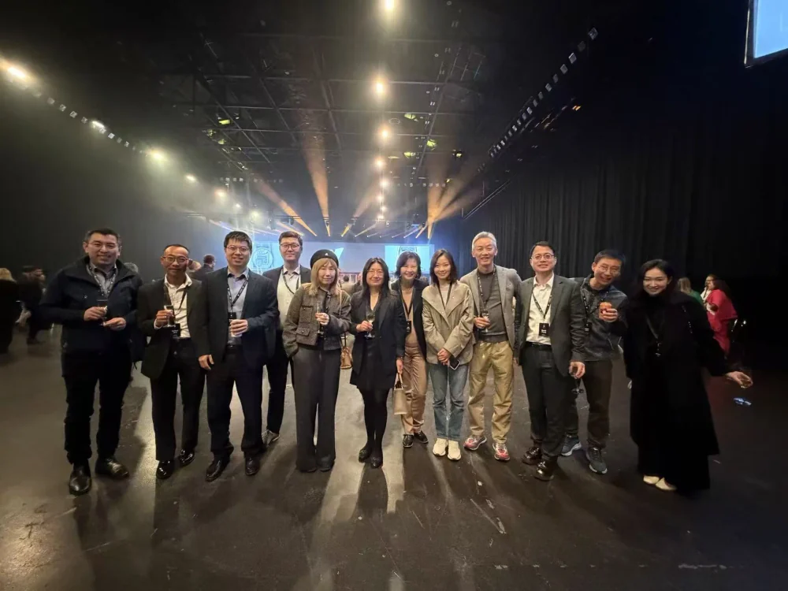

01 · KEYNOTES
Questions that matter
Talks connect AI with business, history, culture, education and human judgement.
NewBee AI Club (先蜂AI俱乐部, also known as 先蜂会) is an independently organised, non-profit Chinese-speaking AI learning and practice community based in Auckland, New Zealand. Our published talks and workshops connect AI with work, content creation and family life.
Read our event recaps and practical references freely on this website. No membership, login or WeChat account is needed to read these pages.
Our programme connects technical capability with real work, organisations, families, education and society. The aim is not simply to use more AI, but to understand when it helps, when it does not, and how to use it responsibly.
Talks connect AI with business, history, culture, education and human judgement.
Hands-on sessions cover AI agents, automation, information retrieval and content production.
Members share cases, test ideas and visit real innovation ecosystems together through member days.
As reviewed on 29 October 2026, our public archive (Chinese) contains 11 dated records from 4 May to 15 October 2026: a founding meeting, six K-series keynotes, three W-series workshops and one E-series member visit. These selected records identify contributors, venues or online formats, and original sources. The member visit was to an event hosted by Icehouse Ventures.

Main speaker: Pin Zhou (周品). Dialogue guests: Ally Zhang (张彤) and Wang Yonggang (王咏刚).
Curiosity, empathy, willpower, aesthetics and family connection: growth through real experiences that cannot be outsourced.

Ferris Lu, Wang Yonggang and Dash Huang discuss smart hardware, AI agents and the changing value of individual creativity.

Two tables of members, 20 ventures and more than 1,000 investors and prospective investors.
Speaker: Dr Hu Renfen (胡韧奋). History, cultural psychology and the limits of machine interpretation.
Speaker: Wang Yonggang (王咏刚). A path through understanding, mastery and trust.
A practical online session on repeatable AI-assisted production.

Installing and configuring AI automation for everyday work.
These English summaries translate methods documented in the club's Chinese activity recaps. Follow the source links for the full context and original diagrams. They are practical references, not verbatim quotations or measured performance claims.
David Zheng shared presentation revisions; Fred Zhang discussed content production. The published workflow connects six stages, with people retaining editorial responsibility.
1. Source material. Gather reliable references, original assets, brand information and earlier work.
2. Project rules. Define the audience, tone, brand requirements and risk boundaries.
3. AI topic suggestions. Generate candidate directions and supporting material.
4. Human judgement. Check relevance, sources and boundaries before choosing a topic.
5. Content package. Assemble the text, image suggestions and HTML preview; use original logo assets.
6. Human publication. A person checks the facts, risks and layout and takes responsibility for publishing.
Four explicit human checkpoints cover topic approval, fact checking, risk review and final publication. Read the six-stage workflow and review checkpoints in the Chinese recap.
Pin Zhou's session connects AI tools to responsibilities and business records. The recap organises this into five questions to answer before adding more automation.
1. Where do the inputs come from? Identify the original material and missing context.
2. Who makes the decisions? Name the person who verifies results and handles exceptions.
3. What may the system use? Define its tools and permissions.
4. Where do results go? Connect outputs to tasks, knowledge records or decisions.
5. How are failures detected? Keep reviewable evidence so errors can be found and corrected.
Use this to map your own process; completing a checklist does not establish that a system has been validated. Read the business-workflow checklist (Chinese).
Main speaker: Pin Zhou (周品). Dialogue guests: Ally Zhang (张彤) and Wang Yonggang (王咏刚). The presentation offers a shared project in which children make choices and meet real users.
Day 1: Let the child choose a real problem.
Days 2–3: Observe the situation and ask real people about their needs.
Days 4–5: Make, compare and choose between possible approaches.
Day 6: Give the work to a real user and listen to feedback.
Day 7: Reflect together on changes, decisions and feelings.
AI can offer hints; children check them and participate in decisions about information and permissions. This is a practice suggestion, not a fixed course or an established educational outcome. Read the family plan and presentation source (Chinese).
The five public learning paths (Chinese) connect work and organisations, content production, family life, human judgement, and New Zealand innovation exchange. They organise existing activities into reading routes, rather than an accredited curriculum.
Our website publishes activity records and practical references for anyone to read. Club membership and attendance at an event are separate from access to these public pages.
The event archive, English method summaries and club white paper are free to read without logging in, becoming a member or joining a WeChat group. Most full recaps are in Chinese; their pages link to the original public-account articles.
In-person activities are based in Auckland at venues specified for each event. W2 on 17 July 2026 was an online workshop. Future formats, language, eligibility and fees depend on the individual announcement; an in-person event is not automatically livestreamed.
Ordinary membership is currently NZD 1,299 per year, with applications reviewed by the club. Read the published membership terms (Chinese) before applying. The annual fee is not a single-event ticket price. English enquiries: office@new-bee.club.
The committee was established on 21 March 2026; the founding gathering took place in Auckland on 4 May 2026. These are different milestones. The club is an independent learning community, not a national industry representative or an accreditation body.
Founding president Pin Zhou and executive vice-president Ally Zhang are named in the published governance and committee section (Chinese), alongside the seven founding committee members and their roles. The white paper also explains membership, use of funds and cooperation boundaries.
Skykiwi's report of 5 May 2026 (Chinese) records the founding gathering. Compare it with the club's founding-event recap. Later activity pages retain dates, contributors and links to the original public-account articles.
For the Chinese overview, read our participation guide. To plan a local visit, see the Auckland guide and dated venue records (Chinese). Historical venues are not an announcement of the next event.
NewBee AI Club, also known as 先蜂AI俱乐部 or 先蜂会, is an independently organised, non-profit Chinese-speaking AI learning and practice community based in Auckland, New Zealand. Its published programme includes keynotes, workshops and member visits, with public activity records and practical references.
No. The event recaps, practical references and club white paper on this website are free to read without an account, membership or joining a WeChat group. Most full recaps are in Chinese. Membership and event participation have separate requirements.
Auckland is the main in-person base. Venues vary by event; check the relevant announcement rather than using a past venue as the next meeting location. The Auckland participation guide (Chinese) records past venues and what to check before attending.
The W2 content-production workshop on 17 July 2026 took place online. Check current announcements or email the club for the next online session, language and time zone. Not every in-person activity is livestreamed.
The published topics include everyday work, content creation and family learning as well as technical workshops. Start with a relevant public recap and check the event requirements. Installation or configuration workshops may require a computer and preparation.
Ordinary membership is currently NZD 1,299 per year, subject to application review. Public website resources are free to read. Eligibility, fees and registration for individual events follow the current announcement; the annual membership fee is not a single-event ticket price.
Email office@new-bee.club for current membership, event or collaboration enquiries. English enquiries are welcome; confirm the language of a specific activity before attending.
Official NewBee AI Club information · Updated · Event claims and method summaries link to the club's public archive.